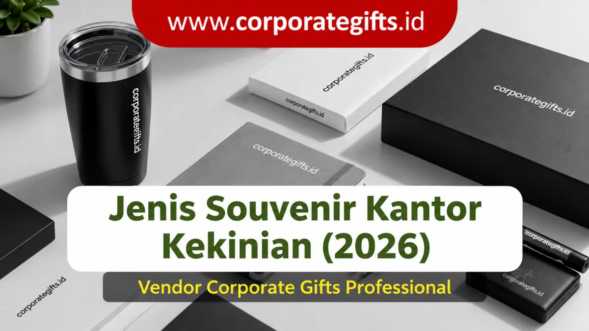

Corporate Gifts ID - Jenis-jenis souvenir kantor kekinian 2026 terbagi menjadi delapan kategori utama, yaitu souvenir branding & promosi, apresiasi & relasi bisnis, fungsional & praktis, digital & teknologi, eco-friendly, health & wellness, lifestyle, serta limited edition & event-specific. Setiap jenis memiliki fungsi strategis berbeda, mulai dari memperluas jangkauan brand awareness, memelihara kemitraan erat dengan klien B2B, hingga memacu semangat serta loyalitas karyawan internal.
Souvenir kantor kini bukan lagi sekadar bingkisan formalitas beranggaran rendah yang dibagikan secara acak pada agenda pertemuan tahunan. Memasuki lanskap bisnis modern 2026, tren pengadaan cenderamata korporat telah berevolusi menjadi instrumen taktis dalam strategi public relations, employer branding, dan retensi kemitraan eksekutif.
Melalui kurasi produk yang tepat, manajemen dapat menanamkan kesan profesional, memperkuat kultur apresiasi di lingkungan kerja, serta memastikan identitas brand hadir secara elegan di meja kerja para pengambil keputusan. Artikel ini mengulas secara mendalam delapan jenis souvenir kantor kekinian beserta fungsi esensial, contoh barang terpopuler, dan formula kombinasinya untuk ragam perhelatan korporat.
Poin Kunci Panduan Souvenir Kantor Kekinian:
- 8 Kategori Komprehensif: Pilihan produk mencakup spektrum luas, mulai dari merchandise promosi massal, perkakas kerja fungsional, gadget digital pintar, hingga paket sustainability eco-friendly.
- Prioritas Kegunaan Nyata: Produk yang terpakai dalam rutinitas kerja harian menjamin frekuensi eksposur logo berulang (brand impression) jauh melampaui cenderamata pajangan.
- Segmentasi Penerima Akurat: Pemilihan material dan kemasan harus diselaraskan dengan profil audiens, membedakan antara peserta seminar umum, karyawan internal, dan tamu VVIP.
- Kualitas Teknik Kustomisasi: Presisi cetak logo melalui sablon UV, grafir laser permanen, atau blind deboss menjaga estetika eksklusif tanpa kesan promosi yang agresif.
Souvenir Kantor Berdasarkan 8 Fungsi Utama
Setiap kegiatan perusahaan memiliki target audiens dan objektif komunikasi yang berlainan. Mengelompokkan souvenir berdasarkan fungsi mempermudah tim pengadaan (procurement) serta divisi HR dalam mengalokasikan anggaran secara tepat guna.
1. Souvenir Branding & Promosi Massal
Kategori ini dirancang khusus untuk memaksimalkan eksposur visual perusahaan seluas-luasnya. Ciri khas utamanya adalah kepraktisan pemakaian di ruang publik sehingga logo instansi mudah tertangkap oleh pandangan mata masyarakat umum.
- Contoh Produk Populer: Tote bag kanvas custom, pulpen promosi, payung lipat berlogo, dan lanyard sublimasi.
- Manfaat Strategis: Menciptakan jangkauan awareness yang masif dengan biaya per impresi (cost per impression) yang sangat efisien, ideal untuk pameran dagang, pameran industri, dan konferensi publik.
2. Souvenir Apresiasi & Relasi Bisnis Eksekutif
Fungsi utamanya adalah mempererat relasi kemitraan B2B dan menunjukkan rasa hormat kepada klien prioritas. Produk pada kategori ini berorientasi pada kualitas material grade premium dengan sentuhan kemasan elegan.
- Contoh Produk Populer: Gift set eksekutif berupa pena metal berukir nama, card holder kulit asli, plakat kristal mewah, dan hamper custom box eksklusif.
- Manfaat Strategis: Mengukuhkan loyalitas klien enterprise, meningkatkan kredibilitas di hadapan dewan komisaris, dan memperkuat citra bonafide perusahaan.
3. Souvenir Fungsional & Praktis Harian
Mengutamakan manfaat operasional bagi penerimanya di kantor maupun saat mobilitas kerja. Semakin sering barang tersebut difungsikan, semakin lekat keterikatan emosional penerima terhadap institusi yang memberikannya.
- Contoh Produk Populer: Buku agenda planner spiral, pouch organizer kabel, payung anti-angin, dan mug keramik meja kerja.
- Manfaat Strategis: Mencegah souvenir berakhir di tempat sampah atau sekadar tersimpan di laci, sehingga investasi pengadaan memberi kegunaan berjangka panjang.
4. Souvenir Digital & Gadget Teknologi Modern
Perkembangan ekosistem kerja fleksibel (hybrid working) menjadikan perangkat teknologi aksesoris pendukung yang sangat diminati. Kategori ini merefleksikan karakter perusahaan yang inovatif, dinamis, dan tanggap terhadap tren digital.
- Contoh Produk Populer: Powerbank fast charging kapasitas besar, wireless charging pad kayu, USB flashdisk metal elegan, dan earphone wireless TWS berlogo custom.
- Manfaat Strategis: Menunjang produktivitas profesional modern di mana pun mereka bertugas sekaligus membangun identitas korporat yang tech-savvy.

Penerapan kustomisasi logo pada perangkat gadget dan cenderamata fungsional untuk mendukung operasional kerja hybrid.
5. Souvenir Ramah Lingkungan (Eco-Friendly Sustainability)
Kesadaran akan prinsip Environmental, Social, and Governance (ESG) kian menjadi standar korporasi global. Souvenir ramah lingkungan merefleksikan komitmen moral perusahaan terhadap pengurangan jejak karbon dan kelestarian alam.
- Contoh Produk Populer: Tumbler stainless steel food-grade SUS 304, notebook bersampul jerami gandum atau kertas daur ulang, cutlery set bambu, dan tas belanja lipat rPET.
- Manfaat Strategis: Memperkuat citra positif di mata publik dan investor, selaras dengan agenda CSR tahunan, serta mendukung gerakan pengurangan sampah plastik sekali pakai.
6. Souvenir Health & Wellness Karyawan
Inisiatif kesejahteraan holistik membuktikan bahwa manajemen memprioritaskan kesehatan fisik dan mental anggota tim. Souvenir bertema wellness memberikan sentuhan kepedulian yang terasa hangat dan personal.
- Contoh Produk Populer: Humidifier aromaterapi meja kantor, reed diffuser aroma relaksasi, hand sanitizer spray kemasan saku, dan botol minum tritan antibakteri.
- Manfaat Strategis: Menurunkan tingkat stres kerja harian, meningkatkan moral tim, dan memperkuat kepuasan kerja karyawan secara menyeluruh.
7. Souvenir Lifestyle & Estetika Generasi Modern
Dengan dominasi tenaga kerja usia produktif generasi milenial dan Gen Z, pendekatan cenderamata bergeser ke arah desain estetik yang minimalis, bergaya urban, dan membanggakan saat dibawa beraktivitas di luar kantor.
- Contoh Produk Populer: Mug keramik berfinishing matte doff, enamel pin tematik, canvas tote bag beraksen kulit sintetis, dan topi polo cap bordir monokrom.
- Manfaat Strategis: Mengubah karyawan dan rekanan menjadi brand advocate sukarela yang bangga membagikan cenderamata kantor mereka ke jejaring media sosial.
8. Souvenir Limited Edition & Event-Specific
Merchandise berstatus edisi terbatas yang dirilis khusus menyambut tonggak sejarah tertentu, seperti ulang tahun perak korporat, peresmian gedung baru, atau penyelesaian merger akuisisi bisnis.
- Contoh Produk Populer: Jaket bomber custom berseri nomor, koin medali logam peringatan, hampers anniversary terkurasi, dan plakat kayu ukir custom.
- Manfaat Strategis: Menimbulkan rasa bangga dan eksklusivitas tinggi karena cenderamata tersebut tidak diproduksi massal secara reguler.
Matriks Perbandingan Kategori Souvenir Kantor
Tabel berikut menyajikan ringkasan komparasi karakteristik dari kedelapan jenis souvenir kantor guna mempermudah penentuan spesifikasi pengadaan:
| Kategori Souvenir | Contoh Produk Utama | Fungsi & Sasaran Utama | Teknik Kustomisasi Ideal |
|---|---|---|---|
| Branding & Promosi | Tote bag, pulpen, lanyard, payung | Awareness massal publik & peserta expo | Sablon manual, DTF, UV print |
| Apresiasi Relasi | Executive leather set, plakat kristal | Penguatan relasi klien VIP & direksi | Laser engraving, hot print foil emas |
| Fungsional Harian | Buku agenda, organizer kabel, mug | Penunjang efisiensi kerja tim kantor | Deboss kulit, sablon pad print |
| Digital & Gadget | Powerbank, wireless charger, flashdisk | Dukungan mobilitas profesional modern | Laser marking, UV flatbed printing |
| Eco-Friendly | Tumbler SUS 304, agenda kertas daur ulang | Kampanye CSR & kepatuhan ESG lingkungan | Grafir laser presisi, tinta ramah lingkungan |
| Health & Wellness | Humidifier meja, reed diffuser, sanitizer | Perhatian atas kesehatan fisik & mental | Label stiker vinyl transparan, sablon mini |
| Lifestyle Estetik | Mug doff minimalis, tote bag urban, topi | Koneksi emosional milenial & Gen Z | Bordir komputer halus, cetak sublim |
| Limited Edition | Gift box anniversary, medali commemorative | Peringatan momen tonggak sejarah korporat | Plat etsa logam, kemasan hardbox foil |
Cara Menentukan Jenis Souvenir Kantor yang Tepat
Agar pengeluaran biaya merchandise memberikan pengembalian investasi (ROI) yang optimal, terapkan empat langkah evaluasi mendasar sebelum menyetujui lembar penawaran vendor:
- Identifikasi Karakteristik Audiens (Persona): Hindari memilih barang semata-mata berdasarkan selera pribadi tim panitia. Cermati rentang usia, jabatan fungsional, dan rutinitas penerima. Klien di level manajemen puncak membutuhkan cenderamata bernuansa eksklusif, sedangkan peserta pelatihan umum membutuhkan perkakas fungsional.
- Kesesuaian dengan Karakter Acara: Agenda formal seperti seminar nasional mensyaratkan paket seminar kit yang terorganisir rapi. Sementara itu, family gathering atau outing tahunan lebih pas dipadukan dengan kaos custom polo dan tumbler olahraga santai.
- Keseimbangan Anggaran terhadap Kuantitas: Mengutamakan kualitas item dalam jumlah terukur jauh lebih menguntungkan reputasi perusahaan dibanding memesan barang murah dalam jumlah melimpah namun rapuh saat digunakan.
- Ketepatan Pesan Branding: Tentukan gol utama kampanye, apakah berfokus pada perluasan jangkauan merek (exposure), apresiasi prestasi internal (recognition), atau perayaan kesepakatan bisnis baru (partnership).
Rekomendasi Kombinasi Souvenir untuk Berbagai Event
Menggabungkan dua hingga tiga item fungsional dalam satu kesatuan kemasan menjadi tren yang sangat diminati korporasi karena menghadirkan pengalaman unboxing yang berkesan:
- Seminar & Lokakarya Nasional: Buku agenda spiral + pulpen metal + tote bag kanvas ramah lingkungan.
- Gathering & Outing Perusahaan: Kaos polo bordir logo + botol minum tumbler olahraga + pouch serbaguna.
- Apresiasi Dewan Direksi & Klien Utama: Executive gift set kulit + tumbler vacuum berukir nama + kartu ucapan bertanda tangan pimpinan dalam kemasan hardbox magnetik.
- Program Onboarding Karyawan Baru: Lanyard id-card kulit + flashdisk OTG + mug keramik meja kerja.
Pertanyaan Seputar Souvenir Kantor Kekinian (FAQ)
Kesimpulan dan Langkah Pengadaan
Ragam jenis souvenir kantor kekinian di tahun 2026 menawarkan fleksibilitas luar biasa bagi korporasi untuk menyampaikan pesan branding secara elegan dan berdaya guna. Dari souvenir promosi massal hingga bingkisan apresiasi eksekutif, kunci kesuksesan pengadaan bertumpu pada keselarasan antara fungsi barang, profil penerima, dan presisi identitas visual merek.
Dengan memilih produk yang relevan dan menggandeng vendor pengadaan B2B tepercaya, perusahaan Anda tidak sekadar membagikan hadiah, melainkan sedang menanamkan investasi citra jangka panjang yang terus menuai apresiasi dan loyalitas.

Ditulis oleh: Arinda Zakia
Senior Corporate Gifting SpecialistPraktisi pengadaan cenderamata korporat dan konsultan merchandise B2B di CorporateGifts.ID dengan spesialisasi pemilihan produk promosi kantor, analisis efisiensi anggaran suvenir, dan standardisasi branding perusahaan modern.
Lihat Profil Lengkap & Panduan Lainnya